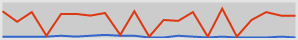
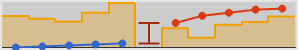

Watch Window

This will be the main window which all your trading post information will be displayed.
- Opens the search window which items can be searched and added to the watch list.
- Refreshes the item trading post data.
- Provides options to change the refresh rate and window transparency.
Watched Item

Any watched items will be updated every interval specified by the refresh rate. The items best selling offer and buying offer as reported by the GW2 APIs will be displayed.
Item Drop Down
- Show Historical
- This will display the historical price chart.
- Show Stock
- This will display the prices and the stocks at each price for the top 5 best buying/selling price. The best price is defined as the highest buying price and the lowest selling price.
- Rescale Bars
- Rescales the stock (orange) bars. This allows shorter bars to be viewed easier. Enabling this option will cause the bars to no longer be proportional to each other, but their relative sizes will still be correct.
Historical Chart

Shows the price of the current top buying and selling offers over time. New data points are added every interval set by the refresh rate. The red line represents the selling price and the blue line represents the buying price.
Stock Chart
Stock Chart without rescaling

Stock Chart with rescaling
The stock chart is divided into three parts.
- Line and points
- These represents the top 5 buying and selling prices for the item.
- The middle interval
- This hows how much you would earn if you were to flip (buy and sell) the item at the current price. If the interval is red then there is a negative profit and green if there is at least 1 copper profit.
- Bars
- These represents the number of items which are players are selling or buying at that price point.